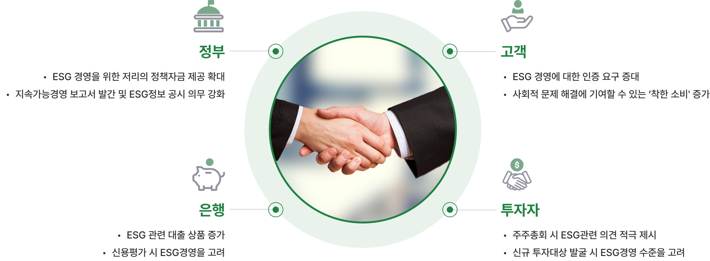
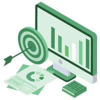
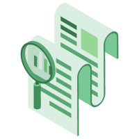
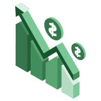

ESG경영의 중심 ESGHUB
-
기업 기회요인
기업 경쟁력 제고
수익성, 성장성 제고
-
기업 위협요인
고용 및 생산 효율성 제고
사고 위험 감소
-
시장 위협요인
체계적 위험 감소
자본 조달 비용 감소
What is ESG?
전세계적으로 기후변화 대응과 지속가능발전(Sustainable development) 촉진에
대한 관심이 높아짐에 따라 환경, 사회, 지배구조 (Enviormental, Social and Goverance, ESG)
와 관련한 이슈 대응이 기업의 중요한 전략과 과제로 급부상하고 있습니다.
지속가능 성장
지속가능 발전을 위해 재무적 가치 뿐만 아니라,
비재무적 가치 상승도 필요합니다.
환경 이슈
- 기후 변화 및 탄소배출
- 대기 및 수질오염
- 생물의 다양성
- 에너지 효율
- 물 부족
- 폐기물 관리
- 삼림 별채
사회 이슈
- 고객만족
- 데이터보호 및 프라이버시
- 성별 및 다양성
- 직원참여
- 지역사회 관계
- 인권
- 노동기준
- 공급망 리스크
- 불공정 관행
지배구조 이슈
- 이사회 구성
- 내부거래
- 감사위원회 구조
- 노물 및 부패
- 임원보상
- 로비
- 정치 기부금
- 내부 고발자
ESG 2.0 출시 예정
EGS는 산업화 이후로 지속적인 관심으로 성장했으며,
최근에 중요성이 강조되고 있습니다.
-
- 1713
- 지속 가능성
최초 사용
-
- 1987
- 지속 가능성
발전 개념 제시
-
- 1994
- Triple Botttom Line
개념 등장
-
- 2012
- 유엔 지속가능발전
정상회의
-
- 2011
- 공유 가치 창출
(CSV) 개념 등장
-
- 2022~
- ESG 2.0
시대
각 나라별 탄소 중립의 대책을 마련하고
수립하기 위해 준비하고 있습니다.
국내상황
1. 현재 기업들은 2020년부터 고객사의 요청사항으로 ESG 평가를 실시하고 있습니다. (대기업>중견>중소 요청)
2. 글로벌 장비업체(일본기업)로부터 시험생산을 의뢰 받은 한 기업은 자체실사 과정에서 CRS(윤리경영)에 대한 정책 및 진행여부 확인 요청(해외 기업> 국내기업 요청)
3.글로벌 화장품 브랜드 ○○○는 프랑스에 본사를 둔 글로벌 기업으로 올해부터 전 하도급 계열사들에게 ‘에코바디스코어(화장품 환경영향 평가)’ 발급을 필수로
구비하라는
요구를 전달하고
올해 11월까지 기본스코어를 획득하고, 차후 당사 임직원들의 인식개선과 실제제조 단계에서 ESG경영 체계를 구축 하도록 강조 (해외 글로벌기업>
국내중소기업 요청)
-
EU
50년 탄소 중립
2019년 12월 발표
- 30년 온실가스 감축 목표 상향 조정(40~55%)
- 탄소국경세 ‘21년 상반기 도입 검토' 중
- 21년 7월 탄소국경세 초안 발표 계획
- 향후 10년간 최소 1조 유로 조성 계획*연평균 130조원 투자
-
미국
50년 Net zero 달성 목표
2020년 07월 발표
- 바이든 행정부 친환경 드라이브 가속화
- 에너지 전환, 기후변화 대응 인프라에 4년간 2조 달러 투자
- 전력부분 2035 탄소배출 제로 달성
- 친환경차 산업 육성 및 연비규제 강화
- 기후변화 국제 공조 주도
-
중국
60년 탄소 중립
2020년 9월 발표
- 제 14차 5개년 계획(21-25년) 이행 계획 포함
- 주요 산업 녹색 전환, 녹색성장 가속화 탄소 감축 방안 구체화, 전국 탄소배출권 거래시장 도입
- 향후 10년간 최소 1조 유로 조성 계획 *연평균 130조원 투자
-
한국
50년 탄소중립 선언
2020년 10월 발표
- 능동적 감축으로 전환
- 3대 정책 방향(10대 과제) 선정
- 25년 2030 국가 온실가스 감축 목표 상향조정 추진
- 경제구조의 저탄소화, 탄소 중립사회로 공정전환, 저탄소산업 생태계 조성
Why ESG 경영?
HOW? ESG경영 준비
ESGHUB는 고객사의 ESG경영을 위해 최적의 솔루션으로 함께합니다.
-
ESG 금융지원
ESG경영을 통해 기업의 필요한

정책/운영자금을 효과적으로
받기위한 코칭 -
ESG 환경구축
ESG 경영을 위한 회사 내부에

기초 설계부터
지속가능기업으로 동반 구축 지원 -
ESG 재무/회계 지원
지배구조를 개선하고, 준법경영과
부패방지경영을 통해서 기업 신뢰를
구축할 수 있도록 지원 -
ESG 안전/보건
기업의 공정성, 근무환경, 근로자의

이익과 권리 보호를 위한 포괄적인 지원 -
ESG 인증
ESG 경영을 위한 필요한 인증
(ISO 9001,14001,45001,
위험성평가 등) 지원
ESGHUB 자가진단
ESGHUB는 고객사의 편의를 위해 자가진단을 지원하고 있습니다.
ESG 기초자가진단 (ESGH)
ESG를 시작하는 기업들을 위해 만든 진단 툴입니다.
진단을 통해 기업의 ESG 상태에 대해서
이해를 하고 준비를 할 수 있도록 지원합니다.
ESG 심화진단 (ESGBOOK)
대기업납품 기업, 해외수출 기업을 준비하는 기업은
국내ESG평가가 아닌 공신력있는 평가를 받으셔야 합니다.
ESGBOOK은 영국에 본사를 둔 ESG평가툴을
국내에 적용하여 해외 진출을 위한 기업을 지원합니다.
위험성 평가진단
E기업의 위험성평가는 선택이 아닌 필수입니다.
사전에 유해,위험요인의 위험성 수준을 파악하고,
위험성 감소대책을 수립, 실행하기 위한 과정을
초기부터 지원하고 같이 함께합니다.